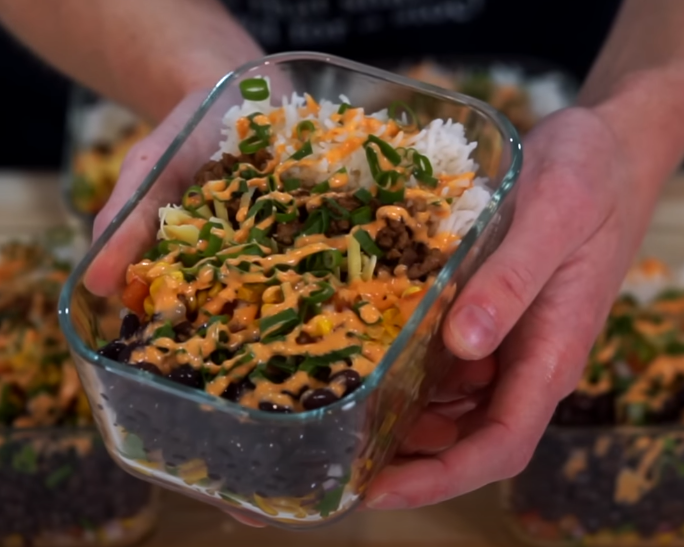

Description
Ingredients
- 1 Can (400g-14.1oz) - Corn Kernels, Drained
- 2 - Tomatoes, Diced
- 1/2 - Red Onion, Diced
- 1 - Jalapeño, Diced
- 7g (0.25oz) - Coriander (Cilantro), Roughly Chopped
- 2 - Small Limes, Juiced
- 2 tsp (10ml) - Olive Oil
- 750g (1.65lbs) - Beef Mince (Ground Beef)
- 1 tsp (2.5g) - Ground Cumin
- 1 tsp (1.5g) - Dried Oregano
- 1 tsp (2.5g) - Smoked Paprika
- 1/2 tsp (1g) - Chilli Powder
- 1/4 Cup (150ml) - Beef Stock
- 3 - Spring Onions (Scallions), Thinly Sliced
- 120g (4.23oz) - Cheddar Cheese, Grated (optional for taste)
- 350g (12.35oz) - Rice, Washed
- Salt and Pepper
Steps
- cook rice in rice cooker
- cook 1 can of corn, slight brown
- to make the salsa mix, dice 2 tamatoes, red onion, jalapeno, coriander and mix into bowl. add salt, pepper, lime juice and olive oil.
- to make the beef, in another bowl, mix ground beef, ground cumin, oregano, paprika, chilli powder, salt and pepper.
- cook ground beef mix in a pan, add 1/4 cup of beef stock for flavor
- meal prep, add rice, corn, salsa mix and beef in seperate corner in the container. add cheese, mayo and chilli sauce for flavor if desired